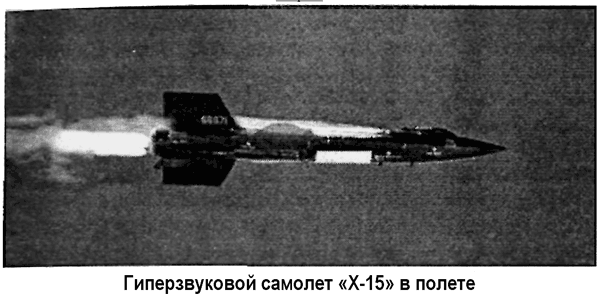
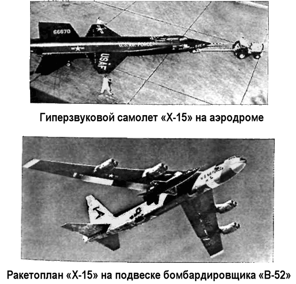
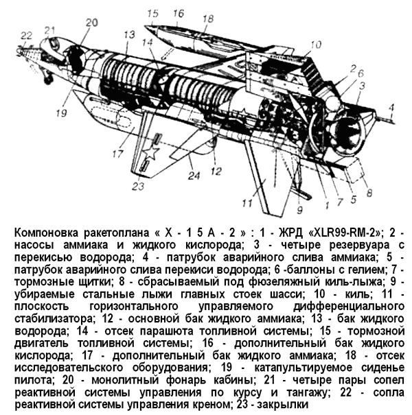

Гиперзвуковой самолет «Х-15»
Программе создания самолета, способного превысить скорость звука в пять и более раз, был дан серьезный толчок 23 декабря 1954 года, когда представители ВВС, ВМС и НАКА подписали Меморандум о сотрудничестве, согласно которому создавался трехсторонний рабочий орган, получивший название «Комитет Х-15» и координировавший все работы по этой программе.
На НАКА возлагались функции контроля за реализацией проекта в целом. ВВС брали на себя изготовление самолета и его приемные испытания на заводе-изготовителе. Затем самолет передавался НАКА, которая проводила программу исследований, с привлечением как своих пилотов, так и пилотов ВВС и ВМС.
Среди двенадцати американских авиакомпаний был объявлен конкурс на создание гиперзвукового самолета, четыре моторостроительные фирмы получили предложение разработать проект ракетного двигателя для него.
Победителем конкурса стала авиационная фирма «Норт Америкен». В ноябре 1955 года с ней был заключен контракт на производство трех самолетов «Икс-15» («Х-15», «NA-240»), а с компанией «Риэкшн Моторз Инк». («Reaction Motors Inc.») в сентябре 1956 года — на производство двигателя «XLR-99».
Проект, представленный «Норт Америкен», предусматривал строительство самолета длиной 15 метров с крыльями стреловидной формы и с размахом — 6,5 метра. Крылья предполагались относительно тонкими и небольшими по площади. Вес самолета составлял около 7 тонн, а после заправки топливом увеличивался до 16,5 тонны. На самолет предполагалось установить жидкостный ракетный двигатель с тягой в 27 тонн. Так как продолжительность работы ракетного двигателя не должна была превышать двух минут, на высоту в 15 километров его собирались доставлять с помощью специально переоборудованного для этих целей бомбардировщика «В-52», а затем должно было происходить разделение ракетоплана и самолета-носителя. Два бомбардировщика «В-52» («Boeing B-52A») были модифицированы для подвески ракетоплана под правой консолью крыла, между фюзеляжем и ближней к нему парой двигателей. При этом они получили обозначения «NВ-52А» и «NB-52B». Посадка производилась на скольжении. С использованием ракетоплана «Х-15» предполагалось достигнуть скорости полета около 6 Махов и высоты в 76 километров.
Строительству и облету опытного образца предшествовали не только обычные аэродинамические и прочностные испытания, но также исследования аэродинамического нагрева (исследования проводились на моделях, выполненных в масштабе 1:15, в диапазоне чисел Маха от 0,6 до 7,0) и специальная подготовка пилотов. Будущие пилоты «Х-15» должны были выполнить 2000 «полетов» на тренажере, пройти испытания на центрифуге, в условиях высоких и низких температур окружающей среды, малых давлений и в состоянии невесомости (испытания в условиях невесомости проводились на пикирующем транспортном самолете).
Первый ракетоплан «Х-15» был построен в середине октября 1958 года и с завода доставлен на авиабазу Эдвардс в штате Калифорния. Перевозка самолета сопровождалась большой помпой с привлечением средств массовой информации.


Программа «Х-15» привлекла общественное внимание, особенно после того, как Советский Союз выиграл «гонку» за первый спутник, и многим американцам казалось, что полеты «космического» самолета станут достойным ответом русским.
Второй экземпляр «Х-15» был готов к апрелю 1959 года, а третий — к июню 1961 года.
Первый испытательный полет состоялся 8 июня 1959 года.
Ракетоплан, пилотируемый летчиком-испытателем фирмы «Норт Америкен» Скоттом Кроссфилдом, отделился от самолета-носителя и начал свободный полет. Двигатель во время этого полета не включался, однако даже при этом самолет плохо слушался пилота и совершил несколько совершенно неожиданных разворотов. Лишь мастерство испытателя позволило ему сохранить управление машиной и через пять минут после отделения совершить благополучную посадку на дне высохшего соленого озера, находящегося на территории авиабазы Эдвардс.
Инженеры корпорации «Норт Америкен» учли проблемы первого полета, внеся изменения в систему управления самолета, что сделало дальнейшие испытания более безопасными.
Следующий полет состоялся 17 сентября 1959 года, и впервые производилось включение ракетного двигателя.
Правда, штатный двигатель «XLR-99» к тому времени еще не был готов и полет совершался с использованием двигателей «XLR-11», которые ранее использовались на самолетах «Х-1». Однако даже использование этого двигателя позволило достигнуть скорости свыше 2000 км/ч. Именно с этого момента начинаются интенсивные испытательные полеты самолета «Х-15».
В своем классическом варианте, фигурировавшем под обозначением «Икс-15А» («Х-15А»), представлял собой среднеплан с прямым трапециевидным крылом. Крыло выполнено без кручения, а угол его поперечной установки равен нулю. Единственными подвижными поверхностями крыла являлись закрылки. Система управления — комбинированного типа (реактивно-аэродинамическая). Аэродинамическими исполнительными элементами служили управляемый дифференциальный стабилизатор и управляемые кили (основной и подфюзеляжный). Каждый киль имел неподвижную (околофюзеляжную) и поворотную (концевую) секции. Подфюзеляжный киль был выполнен разъемным.
Его поворотная секция устанавливалась после подвески «Х-15» под самолетом-носителем и отбрасывалась перед посадкой. Неподвижные секции килей оканчивались четырехстворчатыми тормозными щитками большой эффективности.
Система аэродинамического управления дополнялась реактивным управлением, обеспечивающим требуемые летные характеристики самолета при полетах на высоте свыше 36 километров. Система реактивного управления работала на газообразных продуктах разложения перекиси водорода и была оснащена соплами, расположенными в концевых сечениях крыла (четыре сопла управления креном) и в передней части фюзеляжа (два сопла управления по тангажу и два управления по курсу).
Управление аэродинамической и реактивной системами осуществлялось независимо: аэродинамической — с помощью обычной ручки управления и педалей, а реактивной — двумя расположенными по бокам кабины рычагами.
Носовая часть фюзеляжа ракетоплана была выполнена в виде конуса с овальным сечением; в ней размещалась кабина пилота с монолитным эллиптическим фонарем, открывавшимся вверх-назад. Кабина была оснащена катапультируемым сиденьем с двумя стабилизирующими поверхностями и выдвижным экраном, предохраняющим пилота от воздействия большого динамического давления. Пилот выполнял полет в высотном скафандре, изготовленном из пятислойной ткани, покрытой алюминиевой краской. При аварии на больших высотах весь самолет до момента входа в плотные слои атмосферы защищал летчика, играя роль спасательной капсулы. При входе в плотные слои пилот должен был совершить обычное катапультирование.
Носовая часть фюзеляжа второго опытного образца сначала имела заостренный передний обтекатель с удлиняющей иглой. В 1960 году в результате проведенной модификации всем самолетам были приданы «тупые носы», более оправданные при полетах с большими скоростями.
Центральная и хвостовая части фюзеляжа (круглого сечения) были снабжены двумя боковыми гаргротами Цилиндрическая часть занята отсеком оборудования (за кабиной), баком окислителя, баком системы реактивного управления, баком горючего и двигателем. В боковых гаргротах находилась проводка, некоторые элементы оборудования и ниши уборки главных стоек шасси.
Шасси — трехстоечное, убираемое вперед. Передняя стойка — со спаренными колесами, главные — со стальными лыжами, заменяемыми после пяти-шести посадок. Для перемещения по аэродрому задняя часть фюзеляжа устанавливалась на специальной тележке.
Контрольно-измерительная аппаратура ракетоплана (массой около 600 килограммов) насчитывала 650 датчиков температуры, 104 датчика аэродинамических сил и 140 датчиков давления, показания приборов посредством телеметрии передавались на землю. Для обеспечения работоспособности конструкции в условиях аэродинамического нагрева планер был выполнен из нержавеющей стали, сплавов никеля, титана и других жаропрочных материалов. Наибольшее применение нашел сплав инконель-Х, сохраняющий свои прочностные характеристики до температуры 590 °C. Из него были выполнены обшивка, лонжероны крыла и переборки внутри баков, а также толстые носки крыла и оперения. Для лучшего отвода тепла с поверхности самолет был покрашен специальной черной силиконовой краской.
Конструкция самолета была рассчитана на семикратные перегрузки, однако выполнение маневров в атмосфере допускалось с перегрузкой не более 4 g.
Всю программу испытаний самолета «Х-15» можно хронологически разделить на три этапа.
Первый продолжался с 1959 по 1962 год. Уже тогда удалось решить все задачи, которые ставили перед собой организаторы проекта. Была достигнута скорость 6 Махов, высота 75190 метров над поверхностью Земли, удалось получить большой объем научной информации по тепловым процессам и аэродинамике. В частности, исследователи установили поразительное соответствие между аэродинамическими процессами, полученными при моделировании и в условиях реального полета. Случались и аварии. 5 ноября 1959 года, во время третьего полета второго опытного образца, в одной из камер двигателя произошел взрыв. Скотт Кроссфилд совершил вынужденную посадку на дно высохшего соляного озера. При этом было повреждено хвостовое оперение, и ракетоплан вышел из строя на три месяца. Подобные неисправности происходили и в будущем, но, используя полученный опыт, другие пилоты отрабатывали данную нештатную ситуацию на тренажере.
В 1962 году компания «Норт Америкен» получила заказ на доработку некоторых бортовых систем самолета для решения новых задач, а Комитет Х-15 начал разрабатывать новую программу испытаний. Следующий этап, который рассчитывался на период с 1963 по 1967 год, кроме новых научных исследований, предусматривал попытку достижения скорости в 7 Махов, достижение высоты полета более 80 километров, покрытие самолета специальными теплозащитными материалами, запуск с борта «Х-15» небольшого искусственного спутника Земли.
Новый уровень высоты (76 километров) был достигнут уже 30 апреля 1962 года во время 52-го испытательного полета.
Но так как это был не предел, исследователи составили дополнительную программу, которая предусматривала совершение еще более высотных полетов. Таких полетов состоялось 13. Во время них ракетопланы выходили на высоты более 80 километров, а это уже практически космическое пространство.
С другой стороны, время, проведенное пилотами в космосе, исчислялось всего лишь десятками секунд.
Примечательно, что и тут американские пропагандисты не упустили своего. Когда 17 июля 1962 года «Х-15» впервые забрался на высоту более 80 километров (если быть совсем точным, 95940 метров), число орбитальных пилотируемых космических полетов исчислялось единицами (два в Советском Союзе и четыре в США, два из которых были суборбитальными). И вполне естественно, что американцы за счет полетов на «Х-15» пытались обогнать СССР по числу космонавтов. В самих Соединенных Штатах конец спорам о статусе пилотов «Х-15» положило командование ВВС, официально приравнявшее их к астронавтам. Однако вне США эти полеты никто так и не признал космическими.
За 9 лет испытаний «Х-15» пилотировали 12 летчиков.
Благодаря полетам на «Х-15» они стали довольно известными людьми и участие в программе открыло перед всеми ними блестящие перспективы. Среди них был и Нейл Армстронг — человек, который первым ступил на Луну. Стал астронавтом и Джо Энгл, совершивший два полета на «Спейс Шаттле».
Но вернемся к ракетоплану. В ходе реконструкции второго опытного образца, он был оснащен двумя дополнительными топливными баками, фюзеляж удлинили на 0,74 метров, и на нем была произведена термозащитная обработка поверхности. Модернизированный самолет получил новое обозначение — «Икс-15А-2» («Х-15А-2»). Первый (планирующий) полет на нем был совершен 28 июня 1964 года.
В хвостовой части под фюзеляжем вместо снятой поворотной части нижнего вертикального оперения мог устанавливаться небольшой гиперзвуковой прямоточный воздушнореактивный двигатель фирмы «Марквардт», с которым даже выполнялись полеты. Однако он так и не был испытан в воздухе. 18 ноября 1966 года на «Х-15А-2» была достигнута рекордная скорость — 6840 км/ч (1,9 км/с). 3 октября 1967 года ракетоплан преодолел рубеж в 7273 км/ч (2,02 км/с, 6,72 Маха). До настоящего времени в авиации этот рубеж не превзойден, хотя Международная авиационная федерация (ФАИ) его и не зарегистрировала — «Х-15» взлетал не самостоятельно, а сбрасывался с самолета-носителя.
Форсированный ракетный двигатель «XLR-99», проработавший 141 секунду, позволил 22 августа 1963 года достигнуть и рекордной высоты — 107,9 километров.
Второй этап программы «Х-15» закончился трагически. 15 ноября 1967 года в ходе полета третьего опытного образца погиб пилот Майкл Адаме. Почему произошла эта катастрофа, неизвестно до сих пор. Вся телеметрическая информация погибла вместе с самолетом. Известно только, что еще при наборе высоты вышли из строя приборы и то, что видел пилот на индикаторах, не соответствовало реальности. Когда ракетоплан уже терпел бедствие, пилот по-прежнему получал информацию о нормальной работе всех систем.
Газеты, которые после подробного освещения первых полетов на долгие годы практически забыли о существовании «Х-15», теперь единодушно ополчились на руководителей программы за «безмерный риск», которому они подвергают пилотов.
Так или иначе, но в 1968 году судьба программы была поставлена на карту. Именно тогда начался и тут же закончился третий этап испытаний ракетоплана. Было совершено еще 8 полетов, но рекордные результаты превзойти не удалось.

Да такой цели и не ставилось. Руководители программы старались не рисковать, все еще надеясь на благоприятный исход. Однако финансирование на 1969 год не было выделено, и пришлось объявить о завершении программы. Всего состоялось 199 полетов.
В последние годы существования программы «Х-15» в специальной американской литературе обсуждалась концепция составной аэрокосмической системы на основе этого ракетоплана.
Было понятно, что энергетические возможности «Х-15» не позволяют ему самостоятельно выйти на орбиту.
Эксперты указывали, что для выведения «Х-15» на орбиту необходима система из четырех «последовательно возрастающих» ракетопланов со стартовым весом в 14 200 тонн!
При этом первая ступень без полезной нагрузки должна весить 12780 тонн, вторая — 1278 тонн, третья — 127,8 тонн и, наконец, четвертая — 12,78 тонны, а с полезной нагрузкой — 14,2 тонны, то есть столько, сколько весит «Х-15» с пилотом и научным оборудованием на борту. На орбите в таком случае ракетоплан должен оказаться совсем без топлива.
Общий груз, выведенный на орбиту такой системой, составит всего лишь 0,4 % от стартового веса.
Разумеется, на деле все это должно было выглядеть совсем не так. В качестве иллюстрации реальной аэрокосмической системы эксперты обычно рассматривают двухступенчатый вариант «В-52 плюс Х-15».
Как уже было сказано выше, отделение «Х-15» от носителя происходит на высоте 12–13 километров при скорости около 800 км/ч. Это максимум, что может дать практически существующая первая ступень со стартовым весом почти 230 тонн, оснащенная воздушно-реактивными двигателями.
В примере гипотетической ракетной системы из четырех ступеней, аналогичных ракетоплану «Х-15», завышены веса ступеней. В том числе второй ступени — 127,8 тонны. А вот оказывается, если взять эту ступень уже готовую с воздушнореактивными двигателями, то она будет весить почти в два раза больше и прирост скорости обеспечит в десять раз меньше, да притом еще только в наиболее выгодном для авиационных аппаратов диапазоне скоростей и высот. Прибавим к скорости 220 м/сек, обеспечиваемой первой ступенью системы «В-52 плюс Х-15», собственную характеристическую скорость второй ступени, то есть «Х-15», равную примерно 2300 м/с. Что окажется? Общий скоростной потенциал этого прообраза двухступенчатой воздушно-космической системы составит примерно 2500 м/с. Отсюда можно прийти к выводу, что наличие первой ступени в виде дозвукового самолета мало что дает для разгона космического аппарата.
Следовательно, рассуждают эксперты, дозвуковую ступень нужно заменить сверхзвуковой. Так появляется предложение использовать вместо системы «В-52 плюс Х-15» систему «ХВ-70 плюс Х-15». Здесь роль первой ступени вместо дозвукового бомбардировщика «В-52» играет экспериментальный сверхзвуковой самолет «ХВ-70 Валькирия», а второй ступени — модернизированный ракетоплан «Х-15».
Стартовый вес самолета «ХВ-70» примерно такой же, как и «В-52» (около 220 тонн), максимальная скорость — около 3300 км/ч, достижимая высота — около 20 километров. Казалось бы, эта первая ступень для воздушно-космической системы значительно лучше, чем дозвуковой самолет. Однако проведенный американскими специалистами анализ показал, что после подвески на «Валькирию» ракетоплана «Х-15» носитель «ХВ-70» не сможет развивать скорость, соответствующую 3 Махам. Даже без наружных подвесок (то есть при «чистой» аэродинамической конфигурации) на числах Маха, близких к трем, некоторые элементы конструкции «Валькирии» находятся под напряжениями, близкими к предельно допустимым. Прочности самолета может не хватить для того, чтобы нести на большой скорости наружную подвеску.
По мнению отдельных американских специалистов, есть основания полагать, что после подвески ракетоплана «Х-15» под самолет «Х-Би-70» последний вообще не смог бы летать со сверхзвуковыми скоростями…